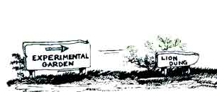
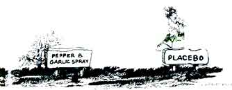

SEASONS OF THE GARDEN
Learn from your own homegrown lab.
IT SEEMS THAT FEW PEOPLE SHARE our belief that back-yard gardeners should be encouraged to do amateur research. After all, there is a pervasive mythology about the difficulties of conducting scientific investigation: It is supposed to be expensive, time-consuming, dangerous, boring and esoteric-in short, best left to specialists.
Of course, some scientific work is hardly appropriate for amateurs (particle physics, for example), but many horticultural experiments are inexpensive, safe and anything but boring. The results of such experiments can lead to substantial savings of time and money, as well as tastier produce and more-attractive landscapes. And for a variety of reasons (including funding limitations), these experiments aren't likely to be done by professional researchers-so if they are carried out at all, it will be by amateurs.
Homegrown horticultural research also offers one enormous advantage over reliance on professionals: The results apply directly to you. The soil type is your soil type, the cultivars used are ones you're interested in, the weather conditions are yours, and so forth. And one of the most delightful aspects is that (when experiments are designed and performed in a reasonable way) there are no "wrong" results, only results that might differ from previous expectations-thus enabling you to correct those expectations in accordance with the actual ways of the world.
The North American Fruit Explorers (membership $8 annually from NAFEX, Rt. 1, Box 94, Chapin, IL 62628) is perhaps the best current example of an association of amateur horticultural researchers. Their quarterly, Pomona , is filled with reports of members' experiments, along with suggestions for additional studies. And Improve Your Gardening with Backyard Research by Lois Levitan (Rodale Press, 1980) is the reference for beginners on how to design, set up and perform horticultural experiments. It's currently out of print but might be available through your local public library.
There are many areas that could benefit from amateur research; natural pest management, mulch, fertilization and intercropping are just a few. In all, the home gardener seeking the truth can help all of us learn and grow. So this year, when you're planning your plot, why not plan one or two home-grown experiments as well?
Soak it to me! Indian botanists claim that soaking tomato seeds in distilled, room-temperature water for about six hours, then air-drying them before planting increased subsequent fruit yields by 44%! The technique might work for some other vegetables, too.
Bug-fighting cabbages. According to field trials conducted by the New York Agricultural Experiment Station, the "old-time" cabbage varieties Danish Ballhead and Early Jersey Wakefield show more resistance to thrips than do newer commercial ones. Red Danish, another "senior cabbage," shows moderate resistance to both thrips and cabbageworms. However, of all 24 varieties tested, up-and-coming (not yet released) Geneva 8395 has the most resistance to both pests!
Grow your own peat . Purdue University researchers have found that milled, low-quality alfalfa can substitute for up to 30% of the peat moss in container growing mixes if the alfalfa has first been composted for at least a week. Apparently, the ammonia in fresh alfalfa can damage seedlings.
The ecological price tag . Two Western Illinois University scientists, attempting to determine the "ecological value" of a tree, estimated that an "average" silver maple might be worth $456 (the value of its providing such environmental benefits as erosion control and wildlife habitat). If such figures are valid, many trees how cut are actually worth more to society than to lumber mills.
Hi-pro corn . A new corn variety with twice the usable protein of most other types has been developed in Mexico. The U.S. National Research Council predicts that the new corn "will be grown worldwide before the turn of the century."
Apple lure shoot-out . Utah State University tests show that some commercially available apple-maggot lures (those red, sticky ball traps) last much longer than others. Ladd Research and Trece lures were effective for only four or five days. Great Lakes IPM and Consep Membranes (both AA and BH types) were long-term performers.
West Coast gardeners will appreciate the evaluations and access listings in the 14-page booklet Vegetable Varieties for Home Gardeners (send a $1 check, payable to U.C. Regents, to University of California ANR Publications, 6701 San Pablo Ave., Oakland, CA 94608).... The 64-page compendium Make Compost in 14 Days is available free of charge from Organic Gardening, Dept. OG-14, 33 E. Minor St., Emmaus, PA 18098. . . . Over 1,000 rose varieties are briefly described and rated for quality in the 1989 Handbook for Selecting Roses (send $1 and an SASE to the American Rose Society, P.O. Box 30000, Shreveport, LA 71130).... For a free software catalogue that lists 58 horticultural and agricultural computer programs (each costs around $20), write the IFAS Software Support Office, University of Florida, Bldg. 1120, Room 203, Gainesville, FL 32611.
Editor's Note: Greg and Pat Williams raise most of their own food on a small farm and publish HortIdeas, a fine newsletter on gardening research and products (available for $15 a year from G. G. & P. Williams, Rt. 1, Box 302, Gravel Switch, KY 40328).
|
 |
 |
|